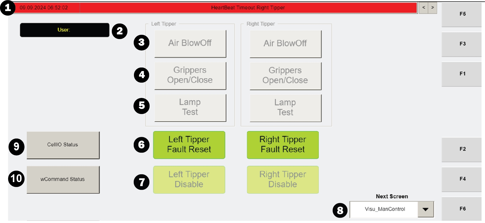
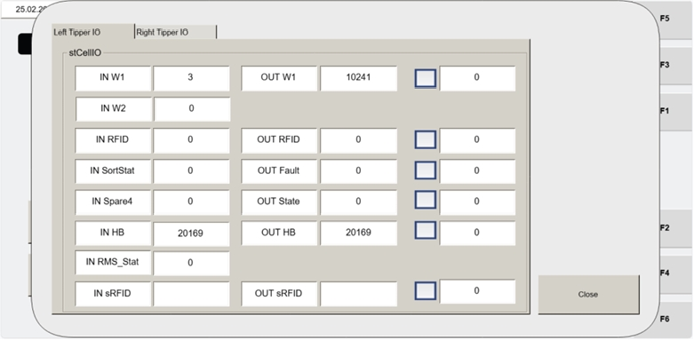

| Procedure ID | proc_verify_agv_stuck_fault_on_cellio_status_hmi_v1 |
|---|---|
| Title | Verify AGV Stuck Fault on the CellIO Status HMI Screen |
| Procedure Type | diagnostic |
| Primary Role | L1_support |
| Support Safe | Yes |
| Validation Status | needs_sme_review |
| Merge Status | source_finalized |
Use the operator station HMI to verify the documented AGV Stuck condition by navigating to the Visu_ManControl screen, opening CellIO Status, selecting the affected tipper, and confirming that OUT Fault Status is 82.
Use this procedure when an AGV remains at the tipper after tote-tipping is complete and the source procedure calls for HMI verification of the AGV Stuck non-recoverable fault condition.
Responsible role: L1_support
Instruction:
Go to the operator station HMI and navigate to the "Visu_ManControl" screen.
Expected result:
The Visu_ManControl screen is displayed on the operator station HMI.
Screens / Images:


Stop or Escalate If:
Responsible role: L1_support
Instruction:
Press the "CellIO Status" button.
Expected result:
The CellIO Status view opens from the Visu_ManControl screen.
Screens / Images:
Stop or Escalate If:
Responsible role: L1_support
Instruction:
Select the tipper where the AGV is stuck.
Expected result:
The affected tipper is selected in the CellIO Status view.
Screens / Images:
Stop or Escalate If:
Responsible role: L1_support
Instruction:
Check the "OUT Fault Status" field for the selected tipper and verify that the value is 82.
Expected result:
The user confirms whether the selected tipper shows OUT Fault Status value 82.
Screens / Images:
Stop or Escalate If: